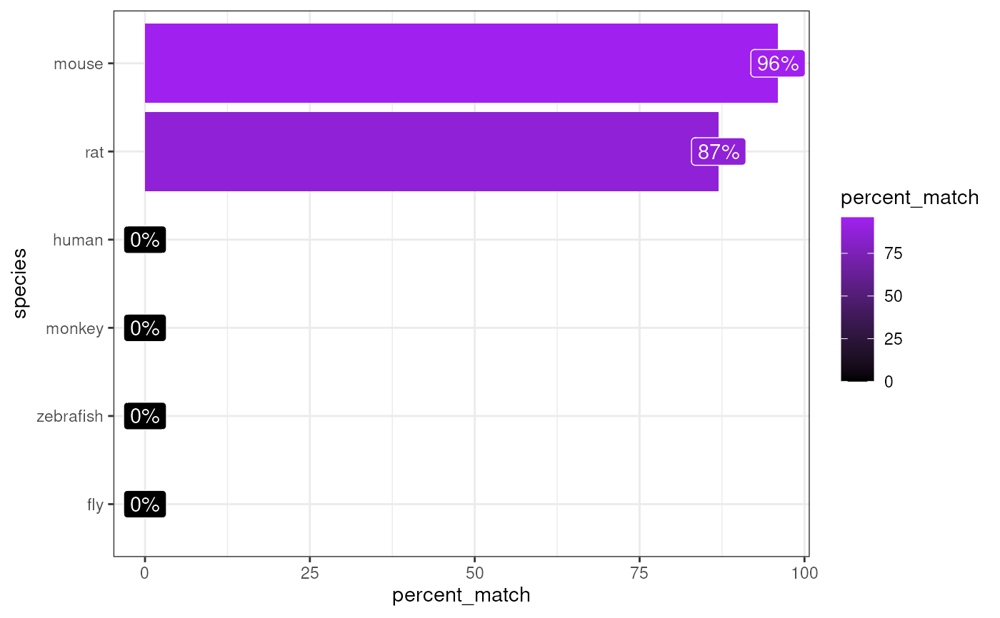

Infers which species the genes within gene_df is from.
Iteratively test the percentage of gene_df genes that match with
the genes from each test_species.
infer_species(
gene_df,
gene_input = "rownames",
test_species = c("human", "monkey", "rat", "mouse", "zebrafish", "fly"),
method = c("homologene", "gprofiler", "babelgene"),
make_plot = TRUE,
show_plot = TRUE,
verbose = TRUE
)Data object containing the genes
(see gene_input for options on how
the genes can be stored within the object).
Can be one of the following formats:
matrix :
A sparse or dense matrix.
data.frame :
A data.frame,
data.table. or tibble.
codelist :
A list or character vector.
Genes, transcripts, proteins, SNPs, or genomic ranges
can be provided in any format
(HGNC, Ensembl, RefSeq, UniProt, etc.) and will be
automatically converted to gene symbols unless
specified otherwise with the ... arguments.
Note: If you set method="homologene", you
must either supply genes in gene symbol format (e.g. "Sox2")
OR set standardise_genes=TRUE.
Which aspect of gene_df to
get gene names from:
"rownames" :
From row names of data.frame/matrix.
"colnames" :
From column names of data.frame/matrix.
<column name> :
From a column in gene_df,
e.g. "gene_names".
Which species to test for matches with.
If set to NULL, will default to a list of humans and
5 common model organisms.
If test_species is set to one of the following options,
it will automatically pull all species from that respective package and
test against each of them:
"homologene"20+ species (default)
"gprofiler"700+ species
"babelgene"19 species
R package to to use for gene mapping:
"gprofiler" : Slower but more species and genes.
"homologene" : Faster but fewer species and genes.
"babelgene" : Faster but fewer species and genes.
Also gives
(slower but more species and genes) or
"homologene" (faster but fewer species and genes).
Make a plot of the results.
Print the plot of the results.
Print messages.
An ordered dataframe of test_speciesfrom best to worst matches.
data("exp_mouse")
matches <- infer_species(gene_df = exp_mouse[1:200,])
#> Preparing gene_df.
#> sparseMatrix format detected.
#> Extracting genes from rownames.
#> 200 genes extracted.
#> Testing for gene overlap with: human
#> Retrieving all genes using: homologene.
#> Retrieving all organisms available in gprofiler.
#> Using stored `gprofiler_orgs`.
#> Mapping species name: human
#> Common name mapping found for human
#> 1 organism identified from search: 9606
#> Gene table with 19,129 rows retrieved.
#> Returning all 19,129 genes from human.
#> Testing for gene overlap with: monkey
#> Retrieving all genes using: homologene.
#> Retrieving all organisms available in gprofiler.
#> Using stored `gprofiler_orgs`.
#> Mapping species name: monkey
#> Common name mapping found for monkey
#> 1 organism identified from search: 9544
#> Gene table with 16,843 rows retrieved.
#> Returning all 16,843 genes from monkey.
#> Testing for gene overlap with: rat
#> Retrieving all genes using: homologene.
#> Retrieving all organisms available in gprofiler.
#> Using stored `gprofiler_orgs`.
#> Mapping species name: rat
#> Common name mapping found for rat
#> 1 organism identified from search: 10116
#> Gene table with 20,616 rows retrieved.
#> Returning all 20,616 genes from rat.
#> Testing for gene overlap with: mouse
#> Retrieving all genes using: homologene.
#> Retrieving all organisms available in gprofiler.
#> Using stored `gprofiler_orgs`.
#> Mapping species name: mouse
#> Common name mapping found for mouse
#> 1 organism identified from search: 10090
#> Gene table with 21,207 rows retrieved.
#> Returning all 21,207 genes from mouse.
#> Testing for gene overlap with: zebrafish
#> Retrieving all genes using: homologene.
#> Retrieving all organisms available in gprofiler.
#> Using stored `gprofiler_orgs`.
#> Mapping species name: zebrafish
#> Common name mapping found for zebrafish
#> 1 organism identified from search: 7955
#> Gene table with 20,897 rows retrieved.
#> Returning all 20,897 genes from zebrafish.
#> Testing for gene overlap with: fly
#> Retrieving all genes using: homologene.
#> Retrieving all organisms available in gprofiler.
#> Using stored `gprofiler_orgs`.
#> Mapping species name: fly
#> Common name mapping found for fly
#> 1 organism identified from search: 7227
#> Gene table with 8,438 rows retrieved.
#> Returning all 8,438 genes from fly.
#> Top match:
#> - species: mouse
#> - percent_match: 96%
